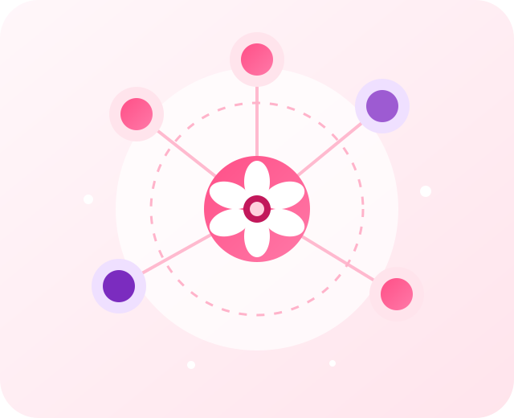

Muito mais que um site.
Uma rede de acolhimento.
O PinkZone é um projeto desenvolvido para aproximar mulheres das informações, dos serviços de proteção e da rede de apoio disponÃvel no Brasil. Nosso compromisso é oferecer um ambiente seguro, acessÃvel e acolhedor para quem busca orientação.

Nossa História
O PinkZone nasceu durante o desenvolvimento de um Trabalho de Conclusão de Curso (TCC), com o objetivo de criar uma plataforma digital que reunisse informações essenciais para mulheres em situação de violência.
Durante o planejamento do projeto, foi identificada a necessidade de um espaço que facilitasse o acesso à rede de apoio, apresentasse orientações de forma simples e incentivasse a busca por ajuda.
Mais do que apresentar conteúdo, o PinkZone busca transmitir acolhimento, segurança e esperança, mostrando que existem pessoas e instituições preparadas para apoiar quem enfrenta situações de violência.
Nosso Propósito
Nosso propósito
Criar um ambiente acolhedor e acessÃvel, onde mulheres possam encontrar orientação, conhecer seus direitos e descobrir os caminhos disponÃveis para buscar proteção e apoio.
Nosso compromisso
Disponibilizar informações organizadas, confiáveis e de fácil compreensão, sempre respeitando a privacidade, a dignidade e a segurança das mulheres que acessam a plataforma.
Como ajudamos
Reunimos, em um único lugar, conteúdos educativos, sinais de alerta, orientações práticas e acesso à rede de apoio para facilitar a busca por ajuda quando ela for necessária.
Nosso impacto
Acreditamos que a informação, o acolhimento e o acesso aos serviços especializados podem incentivar mulheres a romper o ciclo da violência e procurar o apoio de que precisam.
Missão, Visão e Valores
Missão
Contribuir para que mulheres tenham acesso a orientações, serviços de proteção e informações que fortaleçam sua segurança e seus direitos.
Visão
Ser uma plataforma reconhecida por incentivar a prevenção da violência contra a mulher e facilitar o acesso à rede de apoio por meio da tecnologia.
Valores
Respeito, empatia, responsabilidade, acolhimento, igualdade, acessibilidade, ética e compromisso com a proteção das mulheres.
O PinkZone em números
0
Mulheres sofreram algum tipo de violência no Brasil em um perÃodo de 12 meses.
180
Canal nacional para orientação, acolhimento e encaminhamento de mulheres.
24h
Os serviços de emergência estão disponÃveis durante todo o dia.
190
Em caso de perigo imediato, acione a PolÃcia Militar.
Base Legal
Lei Maria da Penha
Criada em 2006, estabelece mecanismos para prevenir, punir e combater a violência doméstica e familiar contra a mulher.
Lei do FeminicÃdio
Reconhece o feminicÃdio como circunstância qualificadora do homicÃdio quando motivado pela condição de gênero da vÃtima.
Constituição Federal
Garante igualdade de direitos, dignidade da pessoa humana e proteção contra qualquer forma de discriminação ou violência.
Direitos Humanos
Toda mulher tem direito à vida, à liberdade, à segurança, ao respeito e à proteção contra qualquer forma de violência.
Desenvolvimento do Projeto
O PinkZone foi desenvolvido como Trabalho de Conclusão de Curso (TCC), unindo tecnologia e responsabilidade social para criar uma plataforma digital voltada ao enfrentamento da violência contra a mulher.
Durante o desenvolvimento, foram priorizados aspectos como acessibilidade, organização das informações, facilidade de navegação e uma identidade visual acolhedora, tornando o site simples de utilizar em diferentes dispositivos.
Cada página foi planejada para cumprir um objetivo especÃfico: apresentar informações relevantes, orientar sobre os sinais de violência, facilitar o acesso à rede de apoio e incentivar a busca por ajuda de maneira segura.
Quem desenvolveu?
Projeto Acadêmico
O PinkZone foi desenvolvido como Trabalho de Conclusão de Curso (TCC), unindo tecnologia e responsabilidade social para criar uma plataforma voltada ao acolhimento e à orientação de mulheres.
Instituição de Ensino
Escola:Escola Estadual Professor Abel Freire Coelho
Curso: Tecnico Em Informatica
Ano: 2026
Desenvolvedores
Nome: Valdemar "Macarrekko" Soares & Kaio "Metal" Jerry
Responsáveis pelo desenvolvimento do site, design da interface,
programação e organização das informações apresentadas na
plataforma.
Informação pode transformar vidas.
O PinkZone acredita que toda mulher merece viver com respeito, segurança e liberdade. Buscar ajuda é um ato de coragem, e conhecer seus direitos pode ser o primeiro passo para romper o ciclo da violência.
💗 Conhecer a Rede de Apoio